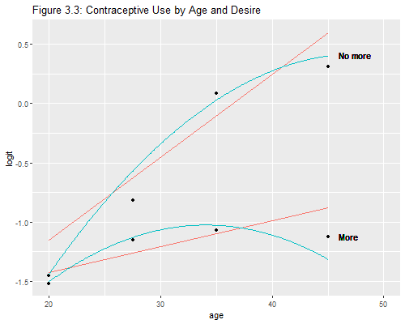

{% include r.css %}


<div id="models-with-two-predictors" class="section level2">
<h2>3.5. Models with Two Predictors</h2>
<p>We now turn to logistic regression models with two or more
predictors. For consistency with the notes we will continue to work with
grouped data. This time we will have 8 groups, defined by the
combinations of four age groups and two categories of desire for more
children, as shown on table 3.7:</p>
<pre class="r"><code>&gt; library(dplyr)
&gt; cuse &lt;- data.frame(matrix(c(
+   1, 0,  58, 265,
+   1, 1,  14,  60,
+   2, 0,  68, 215,
+   2, 1,  37,  84,
+   3, 0,  79, 230,
+   3, 1, 158, 145,
+   4, 0,  14,  43,
+   4, 1,  79,  58), 8, 4, byrow=TRUE))
&gt; names(cuse) &lt;- c(&quot;ageg&quot;,&quot;nomore&quot;,&quot;users&quot;,&quot;nonusers&quot;)
&gt; cuse &lt;- mutate(cuse, n = users + nonusers,
+   ageg = factor(ageg, labels=c(&quot;&lt; 25&quot;,&quot;25-29&quot;,&quot;30-39&quot;,&quot;40-49&quot;)))
&gt; cuse</code></pre>
<pre><code>   ageg nomore users nonusers   n
1  &lt; 25      0    58      265 323
2  &lt; 25      1    14       60  74
3 25-29      0    68      215 283
4 25-29      1    37       84 121
5 30-39      0    79      230 309
6 30-39      1   158      145 303
7 40-49      0    14       43  57
8 40-49      1    79       58 137</code></pre>
<p>There are five basic models of interest for this dataset. I will fit
fit them all and, when it’s all done, reproduce the deviances in Table
3.8.</p>
<div id="the-age-model" class="section level3">
<h3>The Age Model</h3>
<p>Let us start with the age model.</p>
<pre class="r"><code>&gt; cuse = mutate(cuse, Y = cbind(users, nonusers))
&gt; mageg &lt;- glm(Y ~ ageg, family=binomial, data=cuse)
&gt; summary(mageg)</code></pre>
<pre><code>
Call:
glm(formula = Y ~ ageg, family = binomial, data = cuse)

Deviance Residuals: 
      1        2        3        4        5        6        7        8  
-0.0838   0.1738  -0.7589   1.1308  -4.8873   4.7260  -3.6293   2.2799  

Coefficients:
            Estimate Std. Error z value Pr(&gt;|z|)    
(Intercept)  -1.5072     0.1303 -11.571  &lt; 2e-16 ***
ageg25-29     0.4607     0.1727   2.667  0.00765 ** 
ageg30-39     1.0483     0.1544   6.788 1.14e-11 ***
ageg40-49     1.4246     0.1940   7.345 2.06e-13 ***
---
Signif. codes:  0 &#39;***&#39; 0.001 &#39;**&#39; 0.01 &#39;*&#39; 0.05 &#39;.&#39; 0.1 &#39; &#39; 1

(Dispersion parameter for binomial family taken to be 1)

    Null deviance: 145.673  on 7  degrees of freedom
Residual deviance:  66.482  on 4  degrees of freedom
AIC: 116.98

Number of Fisher Scoring iterations: 4</code></pre>
<p>Note that the parameter estimates and standard errors are exactly the
same as in Section 3.4, when we worked with only four binomial
observations, showing that grouping the data does not affect any of
these statistics.</p>
<p>The model deviance, however, is different. In Section 3.4 the
deviance was zero because the model fitted exactly the four groups. Here
we work with eight groups and get a deviance of 66.48.</p>
</div>
<div id="the-additive-model" class="section level3">
<h3>The Additive Model</h3>
<p>We are now ready to consider a model with both age and desire for no
more children:</p>
<pre class="r"><code>&gt; madd &lt;- glm(Y ~ ageg + nomore, family=binomial, data=cuse)
&gt; summary(madd)</code></pre>
<pre><code>
Call:
glm(formula = Y ~ ageg + nomore, family = binomial, data = cuse)

Deviance Residuals: 
      1        2        3        4        5        6        7        8  
 1.1823  -2.0890   1.2383  -1.6419  -1.4197   1.2870  -1.5180   0.9067  

Coefficients:
            Estimate Std. Error z value Pr(&gt;|z|)    
(Intercept)  -1.6939     0.1352 -12.526  &lt; 2e-16 ***
ageg25-29     0.3678     0.1754   2.097    0.036 *  
ageg30-39     0.8078     0.1598   5.056 4.27e-07 ***
ageg40-49     1.0226     0.2039   5.014 5.32e-07 ***
nomore        0.8241     0.1171   7.037 1.97e-12 ***
---
Signif. codes:  0 &#39;***&#39; 0.001 &#39;**&#39; 0.01 &#39;*&#39; 0.05 &#39;.&#39; 0.1 &#39; &#39; 1

(Dispersion parameter for binomial family taken to be 1)

    Null deviance: 145.673  on 7  degrees of freedom
Residual deviance:  16.789  on 3  degrees of freedom
AIC: 69.285

Number of Fisher Scoring iterations: 4</code></pre>
<pre class="r"><code>&gt; exp(coef(madd)[&quot;nomore&quot;])</code></pre>
<pre><code> nomore 
2.27981 </code></pre>
<p>Compare the results with Table 3.9 on page 26 of the notes.
Exponentiating the coefficient of “nomore” we get an odds ratio of 2.28.
This means that the odds of using contraception among women who want no
more children are double the odds among women in the same age group who
do want more children. The model assumes that the odds ratio is the same
for every age group, an assumption we will need to test.</p>
<p>To test the significance of the odds ratio for no more we can use the
z-statistic given in the output, technically a Wald test. The value of
7.04 can be squared to obtain a chi-squared statistic on one d.f. The
likelihood ratio test would compare the additive model with the age
model.</p>
<pre class="r"><code>&gt; coef(madd)[&quot;nomore&quot;]^2/vcov(madd)[&quot;nomore&quot;,&quot;nomore&quot;]</code></pre>
<pre><code>  nomore 
49.51564 </code></pre>
<pre class="r"><code>&gt; -2*(logLik(mageg)-logLik(madd))</code></pre>
<pre><code>&#39;log Lik.&#39; 49.69282 (df=4)</code></pre>
<p>We obtain chi-squared statistics of 49.5 and 49.7 on one d.f., so
there is no doubt that the odds of using contraception in any given age
group vary by whether the women want more children.</p>
</div>
<div id="a-model-with-an-interaction" class="section level3">
<h3>A Model with an Interaction</h3>
<p>We now add an interaction between age and desire for no more
children.</p>
<pre class="r"><code>&gt; mint &lt;- glm(Y ~ ageg * nomore, family=binomial, data=cuse)</code></pre>
<p>We can test the significance of the interaction <span class="r">by
computing a Wald test from the coefficients and their variance
matrix.</span>] The likekihood ratio test would compare the additive
model and the model with the interaction.</p>
<pre class="r"><code>&gt; want = paste(c(&quot;ageg25-29&quot;,&quot;ageg30-39&quot;,&quot;ageg40-49&quot;), &quot;nomore&quot;, sep=&quot;:&quot;)
&gt; b = coef(mint)[want]
&gt; V = vcov(mint)[want,want]
&gt; t(b) %*% solve(V) %*% b</code></pre>
<pre><code>         [,1]
[1,] 16.02916</code></pre>
<pre class="r"><code>&gt; deviance(madd)  # also -2*(logLik(madd) - loglik(mint))</code></pre>
<pre><code>[1] 16.78881</code></pre>
<p>Can you reproduce the Wald test for all terms involving
preferences?</p>
</div>
<div id="reparametrizing-interactions" class="section level3">
<h3>Reparametrizing Interactions</h3>
<p>It may be easier to present the result for this model in terms of
odds ratios by desire for more children in the different age groups, as
discussed on page 27 of the notes, see also Table 3.10.</p>
<p>To this end we need to specify the interaction as usual, but omit the
main effect of wanting no more.</p>
<pre class="r"><code>&gt; altp &lt;- glm(Y ~ ageg + ageg:nomore, family=binomial, data=cuse)
&gt; want = paste(c(&quot;ageg&lt; 25&quot;,&quot;ageg25-29&quot;,&quot;ageg30-39&quot;,&quot;ageg40-49&quot;),&quot;nomore&quot;,sep=&quot;:&quot;)
&gt; exp(coef(altp)[want])</code></pre>
<pre><code> ageg&lt; 25:nomore ageg25-29:nomore ageg30-39:nomore ageg40-49:nomore 
        1.066092         1.392682         3.172414         4.183498 </code></pre>
<p>The parameters now represent differences in the logit scale between
women who do not want more children and those who, do in each of the
four age groups. Exponentiating the coefficients we find that the odds
of u sing contraception for women who want no more children, compared to
those who do, are 7% higher at age under 25, 39% higher at ages 25-29,
three times as high at age 30-39, and four times as high at age 40-49.
The parametrization used here effectively combines the “main” effect of
wanting no more children (really the effect in the first age group) with
the “additional” effect as one moves to older age groups, in a single
number for each age group. This leads to a more direct presentation of
the results.</p>
</div>
<div id="the-deviance-table" class="section level3">
<h3>The Deviance Table</h3>
<p>At this point we have fit all the models listed in Table 3.8 except
for the null model and the model with desire.</p>
<pre class="r"><code>&gt; mnull &lt;- glm(Y ~ 1, family=binomial, data=cuse)
&gt; mnom &lt;- glm(Y ~ nomore, family=binomial, data=cuse)
&gt; models &lt;- list(null= mnull, ageg=mageg, nomore=mnom, additive=madd, interact=mint)
&gt; data.frame(deviance = round(unlist(lapply(models,deviance)),2),
+                df = unlist(lapply(models, df.residual)))</code></pre>
<pre><code>         deviance df
null       145.67  7
ageg        66.48  4
nomore      54.00  6
additive    16.79  3
interact     0.00  0</code></pre>
<p>Make sure you can build tests for the gross and net effects of each
factor from this deviance table.</p>
</div>
<div id="analysis-of-covariance-models" class="section level3">
<h3>Analysis of Covariance Models</h3>
<p>We now treat age as a covariate, using the mid-points of the age
groups just as we did before:</p>
<pre class="r"><code>&gt; cuse &lt;- mutate(cuse, agem = c(20, 27.5, 35, 45)[as.numeric(ageg)])</code></pre>
<p>The first model of interest has a linear effect of age, and is
analogous to simple linear regression:</p>
<pre class="r"><code>&gt; magel &lt;- glm(Y ~ agem, family=binomial, data=cuse)
&gt; exp(coef(magel)[&quot;agem&quot;])</code></pre>
<pre><code>    agem 
1.062549 </code></pre>
<p>The estimated slope shows that the odds of using contraception
increase about six percent per year of age, the same result we obtained
in Section 3.4.</p>
<p>The second model of interest includes additive effects of age and
desire for no more children, and is analogous to an analysis of
covariance model:</p>
<pre class="r"><code>&gt; maddl &lt;- glm(Y ~ agem + nomore, family=binomial, data=cuse)
&gt; exp(coef(maddl)[&quot;nomore&quot;])</code></pre>
<pre><code> nomore 
2.28393 </code></pre>
<p>We see that the odds of using contraception are 128% higher among
women who want no more children than among women who want more and have
the same age. The estimated difference in log-odds when we adjust
linearly for age is very similar to that obtained by treating age as a
factor (0.826 vs. 0.824).</p>
<p>None of these models fits the data very well, so we add an
interaction between age and desire for no more children. As usual, we
center age before constructing the interaction</p>
<pre class="r"><code>&gt; cuse &lt;- mutate(cuse, agec = agem-30.6, nomXagec = nomore*agec)
&gt; mintl &lt;- glm(Y ~ agem + nomore + nomXagec, family=binomial, data=cuse)
&gt; summary(mintl)$coefficients</code></pre>
<pre><code>               Estimate Std. Error   z value     Pr(&gt;|z|)
(Intercept) -1.86215247 0.31087843 -5.989970 2.098797e-09
agem         0.02182294 0.01036621  2.105199 3.527397e-02
nomore       0.75750899 0.12184179  6.217153 5.062570e-10
nomXagec     0.04799135 0.01543795  3.108660 1.879378e-03</code></pre>
<pre class="r"><code>&gt; exp(coef(mintl))</code></pre>
<pre><code>(Intercept)        agem      nomore    nomXagec 
  0.1553379   1.0220628   2.1329564   1.0491616 </code></pre>
<p>The estimates agree with the results in Table 3.12. We see that the
odds of using contraception among women who want more children are about
two percent higher per year of age. The odds among women who want no
more children are double those of women who want more at the mean age
(30.6). This ratio is about five percent higher per year of age above
the mean (and of course five percent lower per year of age below the
mean).</p>
<p>Another way to look at this result is to note that the odds of using
contraception among women who want no more children are about 7 percent
higher per year of age. This may be seen more clearly if we parametrize
the model using two constants and two slopes</p>
<pre class="r"><code>&gt; cuse &lt;- mutate(cuse, more=1-nomore, moreXagec = more*agec)
&gt; altp = glm(Y ~ -1 + more + moreXagec + nomore + nomXagec, family=binomial, data=cuse)
&gt; summary(altp)$coefficients</code></pre>
<pre><code>             Estimate Std. Error    z value     Pr(&gt;|z|)
more      -1.19437053 0.07859690 -15.196153 3.750046e-52
moreXagec  0.02182294 0.01036621   2.105199 3.527397e-02
nomore    -0.43686153 0.09310182  -4.692299 2.701523e-06
nomXagec   0.06981429 0.01143993   6.102684 1.043020e-09</code></pre>
<pre class="r"><code>&gt; exp(coef(altp))</code></pre>
<pre><code>     more moreXagec    nomore  nomXagec 
0.3028946 1.0220628 0.6460609 1.0723090 </code></pre>
<p>which is the main body of Table 3.12. Testing for equality of slopes
is equivalent to testing the interaction term in the previous
specification</p>
<pre class="r"><code>&gt; r &lt;- c(0, 1, 0, -1) # moreXagec - nomXagec
&gt; b &lt;- r %*% coef(altp); 
&gt; V &lt;- r %*% vcov(altp) %*% r
&gt; b^2/V</code></pre>
<pre><code>         [,1]
[1,] 9.663768</code></pre>
<p>If you install the package <code>car</code> you can use the
<code>linearHypothesis()</code> function to build Wald tests. Try
<code>linearHypothesis(altp, c("moreXagec - omXagec")</code>.</p>
</div>
<div id="plotting-observed-and-fitted-logits" class="section level3">
<h3>Plotting Observed and Fitted Logits</h3>
<p>Time for a plot. We will reproduce Figure 3.3 in the notes, comparing
the analysis of covariance model we just fitted, a model with a
quadratic effect of age where the curvature is assumed to be the same
for the two groups defined by preferences, and the anova type model
which was saturated for the age by preferences table, and thus
represents observed logits.</p>
<pre class="r"><code>&gt; library(ggplot2)
&gt; cuse &lt;- mutate(cuse, obs = qlogis(users/n), agecsq = agec^2)
&gt; # make prediction datasets for the linear and quadratic fits
&gt; linear &lt;- data.frame(agem=c(20,45), nomore=0, nomXagec=0)
&gt; linear &lt;- mutate(linear, y0=predict(mintl, linear), 
+   y1=predict(mintl,mutate(linear,nomore=1, nomXagec=(agem-30))))
&gt; quadratic &lt;- data.frame(agem=seq(20,45,.1)) |&gt; 
+   mutate(agec=agem-30, agecsq=agec^2, nomore=0)
&gt; quadratic &lt;- mutate(quadratic, y0=predict(curvy,quadratic), 
+   y1=predict(curvy, mutate(quadratic, nomore=1)))
&gt; # plot observed and fitted
&gt; png(&quot;fig33r.png&quot;, width=500, height=400)
&gt; ggplot(cuse, aes(agem, obs)) + geom_point() +
+   geom_text(aes(46, obs[7], label=&quot;More&quot;, hjust=&quot;left&quot;)) +
+   geom_text(aes(46, obs[8]+0.1, label=&quot;No more&quot;, hjust=&quot;left&quot;)) +
+   geom_line(data=linear, mapping=aes(agem, y0, color=&quot;blue&quot;)) +
+   geom_line(data=linear, mapping=aes(agem, y1, color=&quot;blue&quot;)) +
+   geom_line(data=quadratic, mapping=aes(agem, y0, color=&quot;green&quot;)) +
+   geom_line(data=quadratic, mapping=aes(agem, y1, color=&quot;green&quot;)) + 
+   coord_cartesian(xlim=c(20,50)) + labs(x=&quot;age&quot;, y=&quot;logit&quot;) +
+   ggtitle(&quot;Figure 3.3: Contraceptive Use by Age and Desire&quot;) +
+   theme(legend.position=&quot;none&quot;)
&gt; dev.off()</code></pre>
<pre><code>png 
  2 </code></pre>
<p></p>
<p>Visually the model with some curvature provides a better fit, but we
have no evidence that it is in fact better than the model with two
straight lines with different slopes.</p>
<p>For purposes of presentation you may consider doing an equivalent
plot in the probability scale. Don’t forget that a linear relationship
in the logit scale will be nonlinear in the probability scale, so you
need to rflect the curvature. <span class="stata">The
<code>function</code> or <code>mspline</code> plot types will be useful
in this regard.</span></p>
<p><small>Updated fall 2022</small></p>
</div>
</div>
